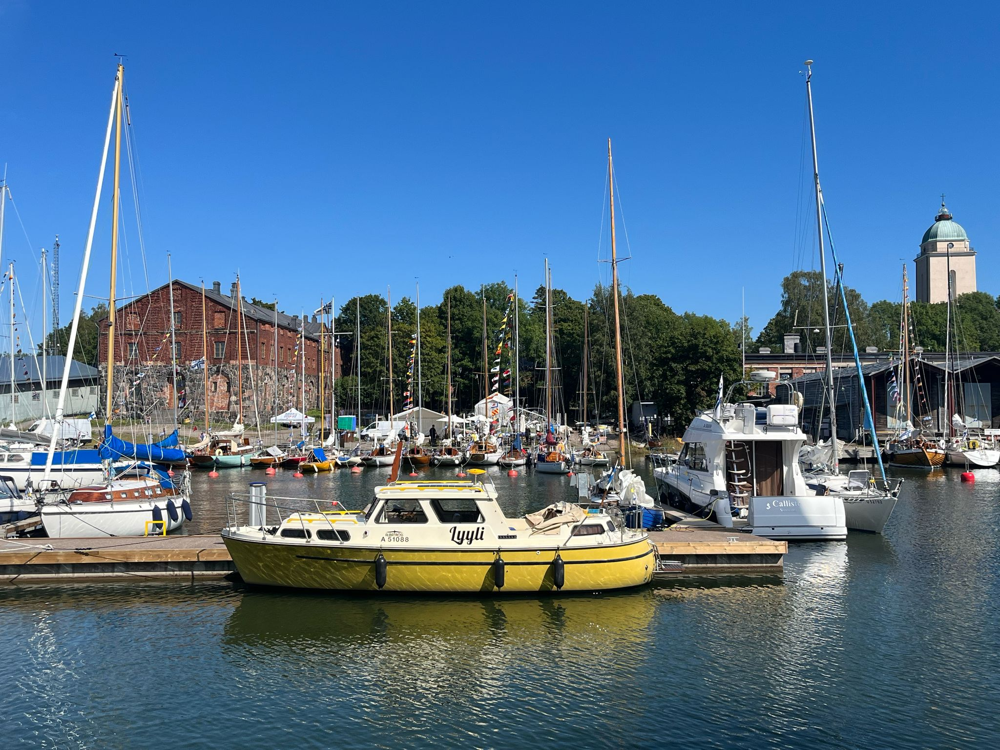
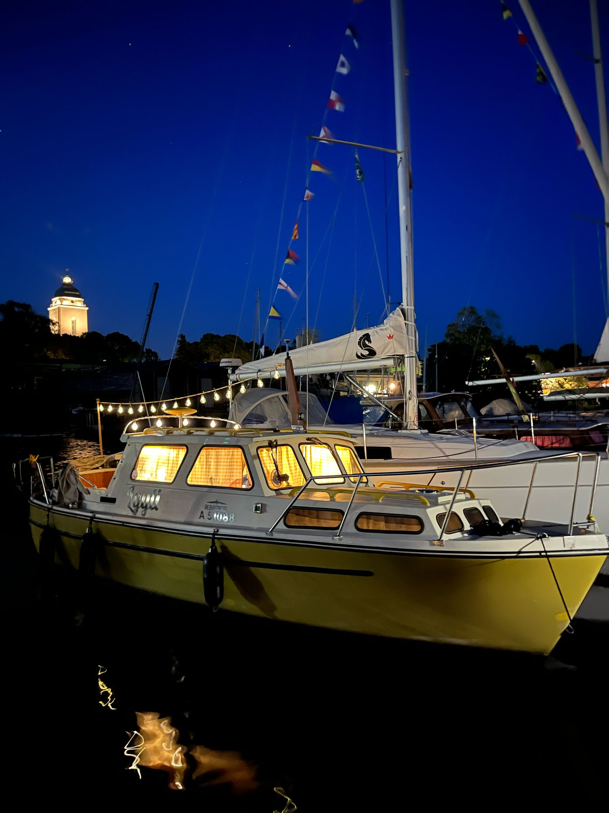

About Lyyli
Lyyli is an Albatross 26, a classic sailing yacht known for its performance and elegance. It features a sturdy hull, comfortable cabin, and is perfect for both day sailing and longer coastal voyages.
- Length: 26 feet
- Type: Sailing Yacht
- Year Built: 1977
- Material: Fiberglass
- Features: Spacious cockpit, modern rigging

